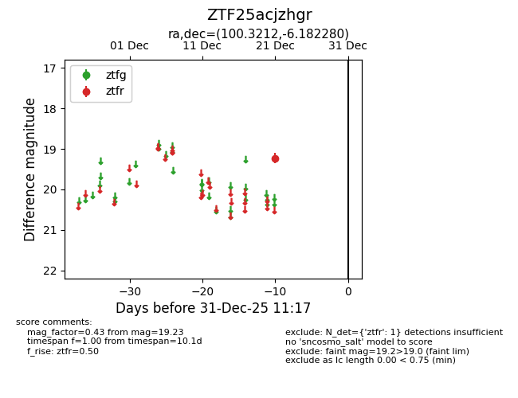
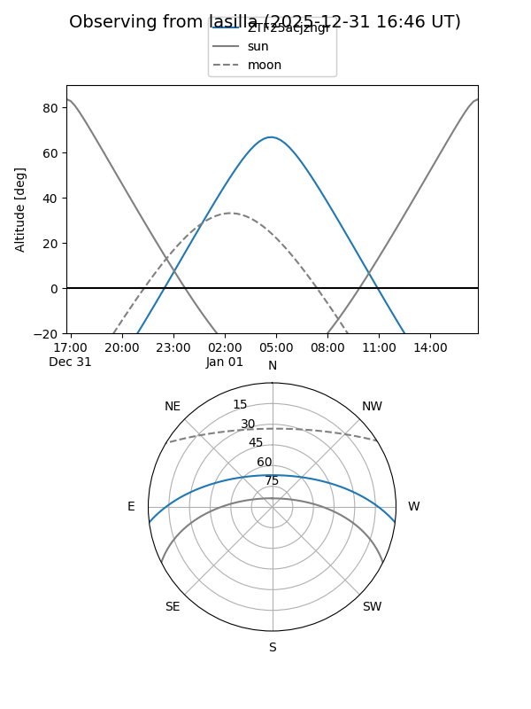
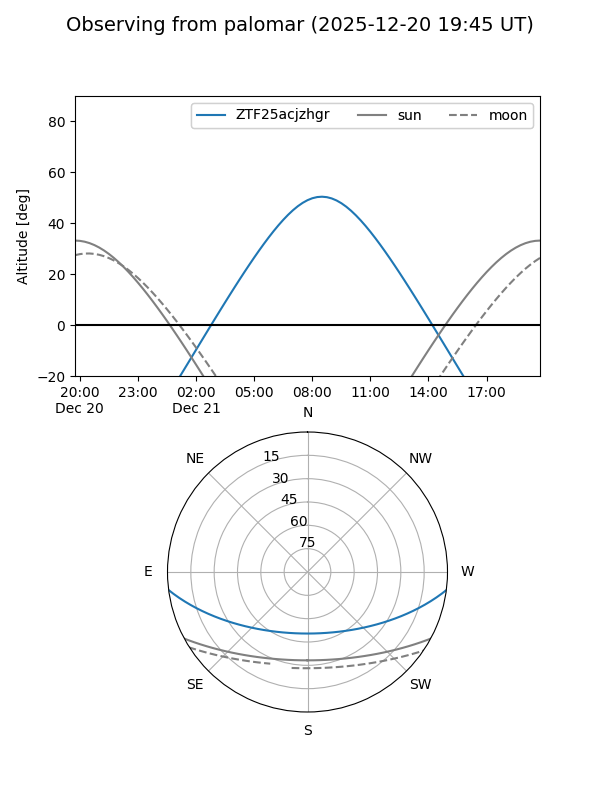

ZTF25acjzhgr
Target ZTF25acjzhgr at 2025-12-31 18:00
Aliases and brokers:
FINK: link
Lasair: link
ALeRCE: link
alt names
ZTF25acjzhgr (ztf,fink_ztf)
Coordinates:
equatorial (ra, dec) = 100.3212,-6.18228
equatorial (HMS+DMS) = 06:41:17.08,-06:10:56.21
galactic (l, b) = (217.2943,-5.06534)
Flags:
Photometry:
last ztfr=19.23
1 ztfr detections
Lightcurve

Visibility


Additional plots